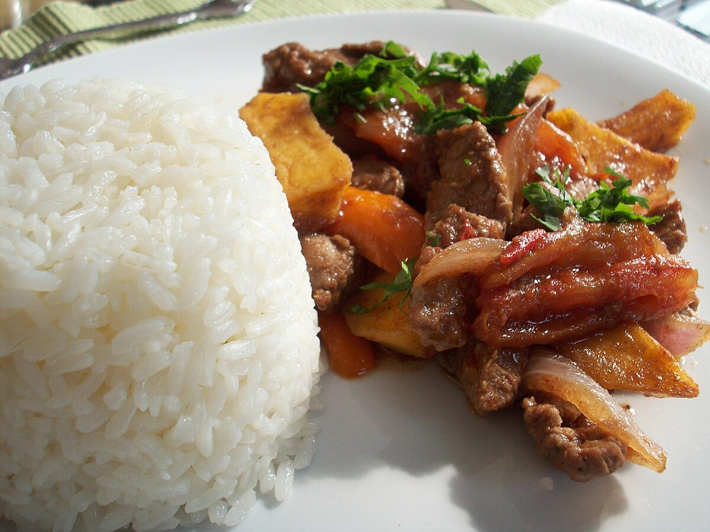

Lomo Saltado
Beef Stir Fry

Description
Lomo Saltado is a traditional Peruvian dish which translates to "Beef Stir Fry" in English.
Ingredients
- 18 ounces sirloin steak
- 1 red onion, chopped into chunky slices
- 2 tomatoes, chopped into 8 slices
- 1 aji amarillo chili pepper, finely sliced, seeds and veins removed
- 1 tsp fresh garlic paste
- 2 tbsp olive oil
- 20 ounces white rice, cooked
- 11 ounces thick potato slices
- ½ cup beef stock
- 4 tbsp soy sauce
- 4 tbsp plain vinegar
- 1 handful cilantro leaves
- ¼ tsp oregano, ground
- 1 tsp black pepper, freshly crushed
- 1 tsp cumin, ground
- salt, to taste
Instructions
- Heat a Pan. Fry the potato slices in the vegetable oil and set aside until needed.
- Cut the sirloin steak into strips or cubes. Marinate them in the cumin, salt, the 4 tablespoons of vinegar, atablespoon of olive oil, black pepper and the soy sauce for 10 minutes beforecooking.
- Bring a tablespoon of olive oil toa very high heat in the wok. Strain and remove the steak strips from the marinade, and fry them over a high heat for around 4-5 minutes or untilsealed.
- Add the onion, ají amarillo chilli pepper and the garlic paste to the wok. Fry for 1 minute whilst continuously moving the wok, and add the beef stock.
- Add the tomato and fry the ingredients in the wok for 30 seconds. Finally add the ground oregano and French fries, tossing everything together for another 10 seconds in order to integrate all the ingredients.
- Serve immediately with white rice and decorate with a few cilantro leaves. Sit back and enjoy the flavor of timeless classic of Peruvian cuisine!